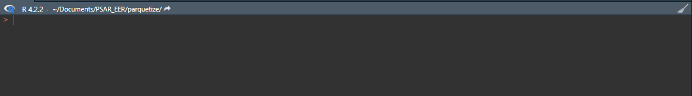

R package that allows to convert databases of different formats (csv, SAS, SPSS, Stata, rds, sqlite, JSON, ndJSON) to parquet format in a same function.
Installation
To install parquetize from CRAN :
install.packages("parquetize")Or alternatively to install the development version from GitHub :
remotes::install_github("ddotta/parquetize")Then to load it :
Why this package ?
This package is a simple wrapper of some very useful functions from the haven, readr, jsonlite, RSQLite and arrow packages.
While working, I realized that I was often repeating the same operation when working with parquet files :
- I import the file in R with {haven}, {jsonlite}, {readr}, {DBI} or {RSQLite}.
- And I export the file in parquet format
As a fervent of the DRY principle (don’t repeat yourself) the exported functions of this package make my life easier and execute these operations within the same function.
The last benefit of using package parquetize is that its functions allow to create single parquet files or partitioned files depending on the arguments chosen in the functions.
-
csv_to_parquet()
- The other benefit of this function is that it allows you to convert csv or txt files whether they are stored locally or available on the internet directly to csv/txt format or inside a zip.
-
json_to_parquet()
-
The other benefit of this function is that it handles JSON and ndJSON files in a same function. There is only one function to use for these 2 cases.
-
The other benefit of this function is that it handles JSON and ndJSON files in a same function. There is only one function to use for these 2 cases.
-
rds_to_parquet()
-
fst_to_parquet()
-
table_to_parquet()
- The other benefit of this function is that it handles SAS, SPSS and Stata files in a same function. There is only one function to use for these 3 cases. To avoid overcharging R’s RAM for huge table, the conversion can be done by chunk. For more information, see here
- sqlite_to_parquet()
- dbi_to_parquet()
For more details, see the examples associated with each function in the documentation.
Example
You want to use the Insee file of first names by birth department? Use R and {parquetize} package that takes care of everything: it downloads the data (3.7 million rows) and converts it to parquet format in few seconds !

Contribution
Feel welcome to contribute to add features that you find useful in your daily work.
Ideas are welcomed in the issues.